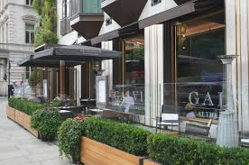
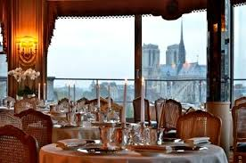

Mysore is a Heritage Station of Karnataka.Nestling in the Western Ghats, the district is one of the most beautiful in the state.
It is verdant and filled with nature’s splendour that spans innumerable shades of green.Driving in, the plains gradually gave way
to mountain ranges and as the road begins to curve upwards, the wide vistas of hills and mountains transports visitors to another world.
All around are mountains, hills, valleys, sholas, paddy fields, grasslands, coffee plantations, pepper and cardamom plants, orange orchards
and amidst all this flows the life-giving river Cauvery.
Set amidst this lush green background, Club Mahindra Coorg is a sprawling resort built in the local Ainmanes tradition and is located within a coffee plantation, swirling with scents, colours and sights of the hill station.
It has 220 luxurious apartments and lots of facilities including a gym, two swimming pools, three restaurants, a lobby lounge and bar, a Holiday Activity Centre, a spa complex and much more.
There are also plenty of activities, sights and views to enjoy during your stay at our resort.